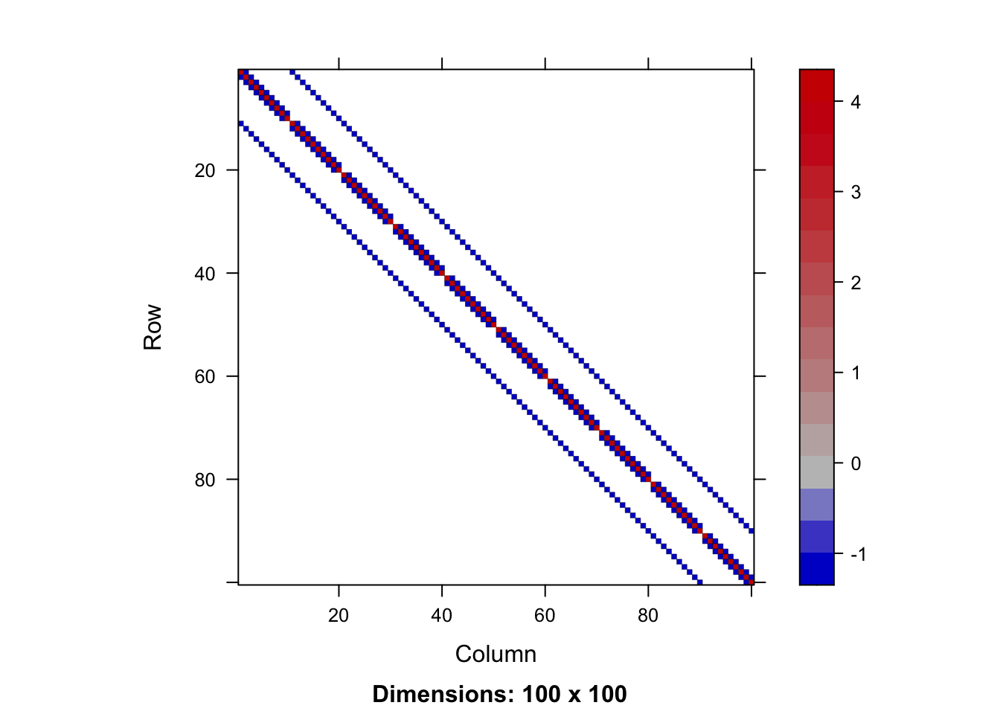
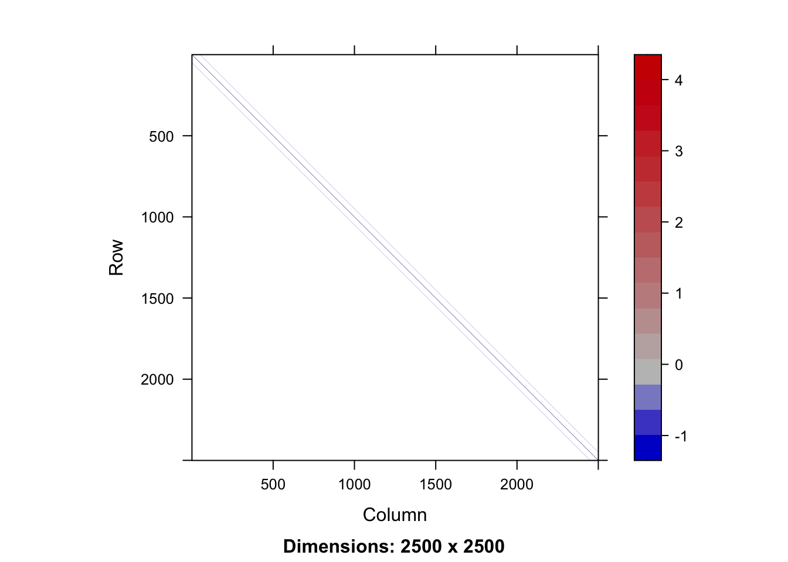

Lecture 5: Iterative Methods for Solving Linear Equations
Author
Joong-Ho Won
Published
April 2026
sessionInfo()
Code Output
R version 4.5.2 (2025-10-31)
Platform: aarch64-apple-darwin20
Running under: macOS Tahoe 26.2
Matrix products: default
BLAS: /System/Library/Frameworks/Accelerate.framework/Versions/A/Frameworks/vecLib.framework/Versions/A/libBLAS.dylib
LAPACK: /Library/Frameworks/R.framework/Versions/4.5-arm64/Resources/lib/libRlapack.dylib; LAPACK version 3.12.1
locale:
[1] en_US.UTF-8/en_US.UTF-8/en_US.UTF-8/C/en_US.UTF-8/en_US.UTF-8
time zone: Asia/Seoul
tzcode source: internal
attached base packages:
[1] stats graphics grDevices utils datasets methods base
loaded via a namespace (and not attached):
[1] htmlwidgets_1.6.4 compiler_4.5.2 fastmap_1.2.0 cli_3.6.5
[5] tools_4.5.2 htmltools_0.5.9 otel_0.2.0 yaml_2.3.12
[9] rmarkdown_2.30 knitr_1.51 jsonlite_2.0.0 xfun_0.56
[13] digest_0.6.39 rlang_1.1.7 evaluate_1.0.5
library(Matrix)library(Rlinsolve) # iterative linear solvers## ** ------------------------------------------------------- **## ** Rlinsolve## ** - Solving (Sparse) System of Linear Equations## **## ** Version : 0.3.3 (2026)## ** Maintainer : Kisung You (kisung.you@outlook.com)## **## ** Please share any bugs or suggestions to the maintainer.## ** ------------------------------------------------------- **library(SparseM) # for visualization## ## Attaching package: 'SparseM'## The following object is masked from 'package:Matrix':## ## detlibrary(lobstr)library(microbenchmark)
Introduction
So far we have considered direct methods for solving linear equations.
Direct methods (flops fixed a priori) vs iterative methods:
Direct method (GE/LU, Cholesky, QR, SVD): accurate. good for dense, small to moderate sized \(\mathbf{A}\)
Iterative methods (Jacobi, Gauss-Seidal, SOR, conjugate-gradient, GMRES): accuracy depends on number of iterations. good for large, sparse, structured linear system, parallel computing, warm start (reasonable accuracy after, say, 100 iterations)
\(\mathbf{A} \in \{0,1\}^{n \times n}\) the connectivity matrix of webpages with entries \[
\begin{eqnarray*}
a_{ij} = \begin{cases}
1 & \text{if page $i$ links to page $j$} \\
0 & \text{otherwise}
\end{cases}.
\end{eqnarray*}
\]\(n \approx 10^9\) in May 2017.
\(r_i = \sum_j a_{ij}\) is the out-degree of page \(i\).
Larry Page imagined a random surfer wandering on internet according to following rules:
From a page \(i\) with \(r_i>0\)
with probability \(p\), (s)he randomly chooses a link \(j\) from page \(i\) (uniformly) and follows that link to the next page
with probability \(1-p\), (s)he randomly chooses one page from the set of all \(n\) pages (uniformly) and proceeds to that page
From a page \(i\) with \(r_i=0\) (a dangling page), (s)he randomly chooses one page from the set of all \(n\) pages (uniformly) and proceeds to that page
The process defines an \(n\)-state Markov chain, where each state corresponds to each page. \[
p_{ij} = (1-p)\frac{1}{n} + p\frac{a_{ij}}{r_i}
\] with interpretation \(a_{ij}/r_i = 1/n\) if \(r_i = 0\).
Stationary distribution of this Markov chain gives the score (long term probability of visit) of each page.
Stationary distribution can be obtained as the top left eigenvector of the transition matrix \(\mathbf{P}=(p_{ij})\) corresponding to eigenvalue 1. \[
\mathbf{x}^T\mathbf{P} = \mathbf{x}^T.
\] Equivalently it can be cast as a linear equation. \[
(\mathbf{I} - \mathbf{P}^T) \mathbf{x} = \mathbf{0}.
\]
You’ve got to solve a linear equation with \(10^9\) variables!
GE/LU will take \(2 \times (10^9)^3/3/10^{12} \approx 6.66 \times 10^{14}\) seconds \(\approx 20\) million years on a tera-flop supercomputer!
Iterative methods come to the rescue.
Splitting and fixed point iteration
The key idea of iterative method for solving \(\mathbf{A}\mathbf{x}=\mathbf{b}\) is to split the matrix \(\mathbf{A}\) so that \[
\mathbf{A} = \mathbf{M} - \mathbf{K}
\] where \(\mathbf{M}\) is invertible and easy to invert.
Then \(\mathbf{A}\mathbf{x} = \mathbf{M}\mathbf{x} - \mathbf{K}\mathbf{x} = \mathbf{b}\) or \[
\mathbf{x} = \mathbf{M}^{-1}\mathbf{K}\mathbf{x} + \mathbf{M}^{-1}\mathbf{b}
.
\] Thus a solution to \(\mathbf{A}\mathbf{x}=\mathbf{b}\) is a fixed point of iteration \[
\mathbf{x}^{(t+1)} = \mathbf{M}^{-1}\mathbf{K}\mathbf{x}^{(t)} + \mathbf{M}^{-1}\mathbf{b}
= \mathbf{R}\mathbf{x}^{(t)} + \mathbf{c}
.
\]
Under a suitable choice of \(\mathbf{R}\), i.e., splitting of \(\mathbf{A}\), the sequence \(\mathbf{x}^{(k)}\) generated by the above iteration converges to a solution \(\mathbf{A}\mathbf{x}=\mathbf{b}\):
Let \(\rho(\mathbf{R})=\max_{i=1,\dotsc,n}|\lambda_i(\mathbf{R})|\), where \(\lambda_i(\mathbf{R})\) is the \(i\)th (complex) eigenvalue of \(\mathbf{R}\). When \(\mathbf{A}\) is invertible, the iteration \(\mathbf{x}^{(t+1)}=\mathbf{R}\mathbf{x}^{(t)} + \mathbf{c}\) converges to \(\mathbf{A}^{-1}\mathbf{b}\) for any \(\mathbf{x}^{(0)}\) if and only if \(\rho(\mathbf{R}) < 1\).
Review of vector norms
A norm \(\|\cdot\|: \mathbb{R}^n \to \mathbb{R}\) is defined by the following properties:
Typical matrix norms are * Frobenius norm: \(\|\mathbf{A}\|_F = \sqrt{\sum_{i,j=1}^n a_{ij}^2} = \sqrt{\text{trace}(\mathbf{A}\mathbf{A}^T)}\); * Operator norm (induced by a vector norm \(\|\cdot\|\)): \(\|\mathbf{A}\| = \sup_{\mathbf{y}\neq\mathbf{0}}\frac{\|\mathbf{A}\mathbf{y}\|}{\|\mathbf{y}\|}\).
It can be shown that * \(\|\mathbf{A}\|_1 = \max_{j=1,\dotsc,n}\sum_{i=1}^n|a_{ij}|\); * \(\|\mathbf{A}\|_{\infty} = \max_{i=1,\dotsc,n}\sum_{j=1}^n|a_{ij}|\); * \(\|\mathbf{A}\|_2 = \sqrt{\rho(\mathbf{A}^T\mathbf{A})}\).
Convergence of iterative methods
Let \(\mathbf{x}^{\star}\) be a solution of \(\mathbf{A}\mathbf{x} = \mathbf{b}\).
Subtracting this from \(\mathbf{x}^{(t+1)} = \mathbf{R}\mathbf{x}^{(t)} + \mathbf{c}\), we have \[
\mathbf{x}^{(t+1)} - \mathbf{x}^{\star} = \mathbf{R}(\mathbf{x}^{(t)} - \mathbf{x}^{\star}).
\]
Take a vector norm on both sides: \[
\|\mathbf{x}^{(t+1)} - \mathbf{x}^{\star}\| = \|\mathbf{R}(\mathbf{x}^{(t)} - \mathbf{x}^{\star})\|
\le \|\mathbf{R}\|\|\mathbf{x}^{(t)} - \mathbf{x}^{\star}\|
\] where \(\|\mathbf{R}\|\) is the induced operator norm.
Thus if \(\|\mathbf{R}\| < 1\) for a certain (induced) norm, then \(\mathbf{x}^{(t)} \to \mathbf{x}^{\star}\).
Theorem
The spectral radius \(\rho(\mathbf{A})\) of a matrix \(\mathbf{A}\in\mathbb{R}^{n\times n}\) satisfies \[
\rho(\mathbf{A}) \le \|\mathbf{A}\|
\] for any operator norm. Furthermore, for any \(\mathbf{A}\in\mathbb{R}^{n\times n}\) and \(\epsilon > 0\), there is an operator norm \(\|\cdot\|\) such that \(\|\mathbf{A}\| \le \rho(\mathbf{A}) + \epsilon\).
In other words, \[
\rho(\mathbf{A}) = \inf_{\|\cdot\|: \text{operator norm}} \|\mathbf{A}\|.
\]
Thus it is immediate to see \[
\rho(\mathbf{A}) < 1 \iff \|\mathbf{A}\| < 1
\] for some operator norm.
Proof
If \(\lambda\) is an eigenvalue of \(\mathbf{A}\) with nonzero eigenvector \(\mathbf{v}\), then \[
\|\mathbf{A}\mathbf{v}\| = |\lambda|\|\mathbf{v}\|
\] (for a vector norm). So \[
|\lambda| = \frac{\|\mathbf{A}\mathbf{v}\|}{\|\mathbf{v}\|} \le \|\mathbf{A}\|,
\] implying the first inequality.
For the second part, suppose \(\mathbf{A}\in\mathbb{R}^{n\times n}\) and \(\epsilon > 0\) are given. Then there exists an (complex) upper triangular matrix \(\mathbf{T}\) and an invertible matrix \(\mathbf{S}\) such that \[
\mathbf{A} = \mathbf{S}\mathbf{T}\mathbf{S}^{-1}
\] and the eigenvalues of \(\mathbf{A}\) coincides with the diagonal entries of \(\mathbf{T}\). (Schur decomposition).
For \(\delta > 0\) consider a diagonal matrix \(\mathbf{D}(\delta)=\text{diag}(1, \delta, \delta^2, \dotsc, \delta^{n-1})\), which is invertible. Then
Since for \(\mathbf{y} = [\mathbf{S}\mathbf{D}(\delta)]^{-1}\mathbf{x}\), there holds \(\mathbf{x} = [\mathbf{S}\mathbf{D}(\delta)]\mathbf{y}\) and \[
\sup_{\mathbf{x}\neq\mathbf{0}}\frac{\|[\mathbf{S}\mathbf{D}(\delta)]^{-1}\mathbf{A}\mathbf{x}\|_{\infty}}{\|[\mathbf{S}\mathbf{D}(\delta)]^{-1}\mathbf{x}\|_{\infty}}
=
\sup_{\mathbf{y}\neq\mathbf{0}}\frac{\|[\mathbf{S}\mathbf{D}(\delta)]^{-1}\mathbf{A}[\mathbf{S}\mathbf{D}(\delta)]\mathbf{y}\|_{\infty}}{\|[\mathbf{S}\mathbf{D}(\delta)]^{-1}[\mathbf{S}\mathbf{D}(\delta)]\mathbf{y}\|_{\infty}}
=
\sup_{\mathbf{y}\neq\mathbf{0}}\frac{\|[\mathbf{S}\mathbf{D}(\delta)]^{-1}\mathbf{A}[\mathbf{S}\mathbf{D}(\delta)]\mathbf{y}\|_{\infty}}{\|\mathbf{y}\|_{\infty}}
\]
Now since the eigenvalues of \(\mathbf{A}\) coincides with \(t_{ii}\), for each \(\epsilon>0\) we can take a sufficiently small \(\delta > 0\) so that \[
\max_{i=1,\dotsc,n}\sum_{j=i}^n |t_{ij}|\delta^{j-i} \le \rho(\mathbf{A}) + \epsilon.
\] This implies \(\|\mathbf{A}\|_{\delta} \le \rho(\mathbf{A}) + \epsilon\).
Implications
Recall > Let \(\rho(\mathbf{R})=\max_{i=1,\dotsc,n}|\lambda_i(\mathbf{R})|\), where \(\lambda_i(\mathbf{R})\) is the \(i\)th (complex) eigenvalue of \(\mathbf{R}\). When \(\mathbf{A}\) is invertible, the iteration \(\mathbf{x}^{(t+1)}=\mathbf{R}\mathbf{x}^{(t)} + \mathbf{c}\) converges to \(\mathbf{A}^{-1}\mathbf{b}\) for any \(\mathbf{x}^{(0)}\) if and only if \(\rho(\mathbf{R}) < 1\).
The if part is proved using the above Theorem. This part holds even if \(\mathbf{A}\) is singular; the limit may depend on \(\mathbf{x}^{(0)}\), but it is always a solution to \(\mathbf{A}\mathbf{x} = \mathbf{b}\).
The only if part when \(\mathbf{A}\) is inverible (hence \(\mathbf{x}^{\star}\) is unique): \[
\mathbf{x}^{(t)} - \mathbf{x}^{\star} = \mathbf{R}^t(\mathbf{x}^{(0)} - \mathbf{x}^{\star}).
\]
If LHS converges to zero for any \(\mathbf{x}^{(0)}\), then \(\mathbf{R}^t \to \mathbf{0}\) as \(t \to \infty\). This cannot occur if \(|\lambda_i(\mathbf{R})| \ge 1\) for some \(i\): if \(\mathbf{x}^{(0)} = \mathbf{v}_i + \mathbf{x}^{\star}\) for an eigenvector \(\mathbf{v}_i \neq \mathbf{0}\) such that \(\mathbf{R}\mathbf{v}_i = \lambda_i\mathbf{v}_i\), then \(\| R^t(\mathbf{x}^{(0)} - \mathbf{x}^{\star}) \| = |\lambda_i|^t\|\mathbf{v}_i\| \geq \|\mathbf{v}_i\| \neq 0\).
Invertibility is necessary since otherwise we do not know if \(\mathbf{x}^{(t)}\) converges to a unique point.
Convergence is guaranteed if \(\mathbf{A}\) is striclty row diagonally dominant: \(|a_{ii}| > \sum_{j\neq i}|a_{ij}|\).
One round costs \(2n^2\) flops with an unstructured\(\mathbf{A}\). Gain over GE/LU if converges in \(o(n)\) iterations.
Saving is huge for sparse or structured\(\mathbf{A}\). By structured, we mean the matrix-vector multiplication \(\mathbf{A} \mathbf{v}\) is fast (\(O(n)\) or \(O(n \log n)\)).
Often the multiplication is implicit and \(\mathbf{A}\) is not even stored, e.g., finite difference: \((\mathbf{A}\mathbf{v})_i = v_i - v_{i+1}\).
Conjugate gradient and its variants are the top-notch iterative methods for solving huge, structured linear systems.
Key idea: solving \(\mathbf{A} \mathbf{x} = \mathbf{b}\) is equivalent to minimizing the quadratic function \(\frac{1}{2} \mathbf{x}^T \mathbf{A} \mathbf{x} - \mathbf{b}^T \mathbf{x}\) if \(\mathbf{A}\)is positive definite.
We defer the details of CG to the graduate-level Advanced Statistical Computing course.
Numerical examples
The Rlinsolve package implements most commonly used iterative solvers.
Generate test matrix
Poisson matrix is a block tridiagonal matrix from (discretized) Poisson’s equation \(\nabla^2\psi = f\) in on the plane (with a certain boundary condition). This matrix is sparse, symmetric positive definite and has known eigenvalues.
Reference: G. H. Golub and C. F. Van Loan, Matrix Computations, second edition, Johns Hopkins University Press, Baltimore, Maryland, 1989 (Section 4.5.4).
get1DPoissonMatrix <-function(n) { Matrix::bandSparse(n, n, #dimensions (-1):1, #band, diagonal is number 0list(rep(-1, n-1), rep(4, n), rep(-1, n-1)))}get2DPoissonMatrix <-function(n) { # n^n by n^n T <-get1DPoissonMatrix(n) eye <- Matrix::Diagonal(n) N <- n * n ## dimension of the final square matrix## construct two block diagonal matrices D <-bdiag(rep.int(list(T), n)) O <-bdiag(rep.int(list(-eye), n -1))## augment O and add them together with D D +rbind(cbind(Matrix(0, nrow(O), n), O), Matrix(0, n, N)) +cbind(rbind(Matrix(0, n, ncol(O)), O), Matrix(0, N, n))}M <-get2DPoissonMatrix(10)SparseM::image(M)
Code Output

n <-50# Poisson matrix of dimension n^2=2500 by n^2, pd and sparseA <-get2DPoissonMatrix(n) # sparse# dense matrix representation of AAfull <-as.matrix(A)# sparsity levelnnzero(A) /length(A)
Code Output
[1] 0.001968
SparseM::image(A)
Code Output

# storage differencelobstr::obj_size(A)
Code Output
159.10 kB
lobstr::obj_size(Afull)
Code Output
50.00 MB
Matrix-vector muliplication
# randomly generated vector of length n^2set.seed(456) # seedb <-rnorm(n^2)# dense matrix-vector multiplicationres <- microbenchmark::microbenchmark(Afull %*% b, A %*% b)
Code Output
Warning in microbenchmark::microbenchmark(Afull %*% b, A %*% b): less accurate
nanosecond times to avoid potential integer overflows
print(res)
Code Output
Unit: microseconds
expr min lq mean median uq max neval
Afull %*% b 2064.801 2140.918 2295.80648 2230.831 2432.878 3746.867 100
A %*% b 10.496 12.628 27.08706 19.926 33.907 455.428 100
Dense solve via Cholesky
# record the Cholesky solution#Achol <- base::chol(Afull) # awfully slowAchol <- Matrix::Cholesky(A) # sparse Cholesky
# two triangular solves; 2n^2 flops#y <- solve(t(Achol), b) #xchol <- solve(Achol, y)xchol <-solve(Achol, b)
Jacobi solver
It seems that Jacobi solver doesn’t give the correct answer.
Documentation reveals that the default value of maxiter is 1000. A couple trial runs shows that 5000 Jacobi iterations are required to get an “accurate enough” solution.